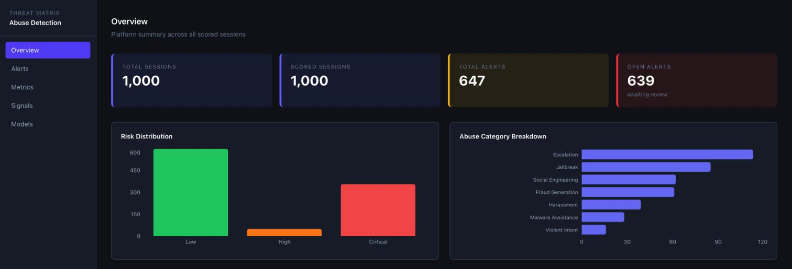
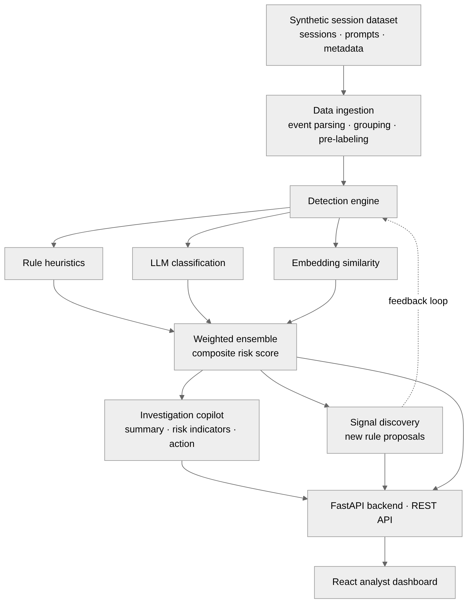

An analyst's console for LLM abuse.
A full-stack system that flags abusive model sessions, explains why in plain language, turns a flag into an investigative report, and red-teams itself to find the attacks it misses.
A personal project, built with AI-assisted coding on synthetic data. Not affiliated with, endorsed by, or connected to my employer. The repository is private by design and shared on request.
Detection you can defend in a review.
Every flag is traceable to the rules it fired and the model's own rationale. The point was never a single score — it's a tool an analyst can actually reason with.
Three-signal hybrid
Rule heuristics, an LLM classifier, and embedding similarity against 26 curated attack templates, fused into one transparent composite with a per-signal breakdown.
Explainable by design
Each alert shows the triggered rules and the model's reasoning, mapped to OWASP LLM and MITRE ATLAS — not a black-box verdict.
Investigation copilot
Turns a flagged session into a structured report: narrative summary, risk indicators, entities, and a recommended action.
Signal discovery loop
Clusters flagged sessions to surface new abuse patterns and proposes new detection rules that feed back into the engine.

What it catches — and what gets past it.
A red-teaming notebook runs 22 structured attacks across 7 evasion techniques and measures two things: which the model refuses, and which the rule engine catches. The gap between them is where a deployment is relying on the model's safety training with no backstop.
11 of 22 attacks bypassed both the model and the rules.
Every obfuscation and roleplay probe got through both layers. Regex rules scored 0.0 on fictional-framing jailbreaks, and the model complied with leetspeak and synonym-swapped prompts. The rule engine's own predictions held 21/22 — it fails exactly where you'd expect, which is the argument for the LLM and embedding layers carrying the novel cases.
A band-aid cap recovered precision; a feature fix earned it.
On hardened data, precision first collapsed to 0.539 — keyword rules over-fired on benign security questions and the composite could only accumulate evidence, never veto. Replacing the undirected classifier confidence with a signed abuse probability moved the learned LLM weight from 0.011 → 0.975 and held precision at 0.866 with no override cap at all. The model carries it, not a hack.
The full methodology, the technique-by-technique table, and the multi-turn escalation probes are in the findings write-up (FINDINGS.md).
The cheapest model won.
Four models classified the same 100 hardened sessions. The premium reasoning model posted the lowest F1 of the frontier three at ~35× the cost — on a well-scoped classification task, extended reasoning was the wrong tool, not a better one.
| Model | Precision | Recall | F1 | Cost / 1k | Latency |
|---|---|---|---|---|---|
| Gemini 2.5 Flash-Lite | 0.923 | 1.000 | 0.960 | $0.16 | 1.28s |
| GPT-4o-mini | 0.857 | 0.960 | 0.906 | $0.22 | 2.28s |
| Claude Sonnet 5 | 1.000 | 0.800 | 0.889 | $5.59 | 5.55s |
| Claude Haiku 4.5 | 0.758 | 1.000 | 0.862 | $1.95 | 2.28s |
n=100 · the precise zero-FP model (Sonnet 5) is the ideal veto layer over a cheap high-recall first pass, not a bulk scorer.

Built to be read.
Hand-written provider adapters over frameworks — no LangChain. SQLite so a reviewer can clone and run with zero setup. A sliding-window token rate limiter that keeps the investigation endpoint under the account's per-minute budget.
Python · FastAPI · React (Vite) · 11 REST endpoints · model-agnostic classifier
Five minutes, end to end.
The dashboard, a live detection run, and the red-teaming analysis.
The walkthrough is shared on request alongside repository access. Ask for the link →
Code and walkthrough, on request.
The repository is private by design — a portfolio piece, not an open-source release. Reach out and I'll share read access to the code and the walkthrough video.
What's inside
FastAPI backend · React analyst dashboard · hybrid detection engine · investigation copilot · signal discovery · a red-teaming notebook · multi-model benchmark harness. MIT licensed.